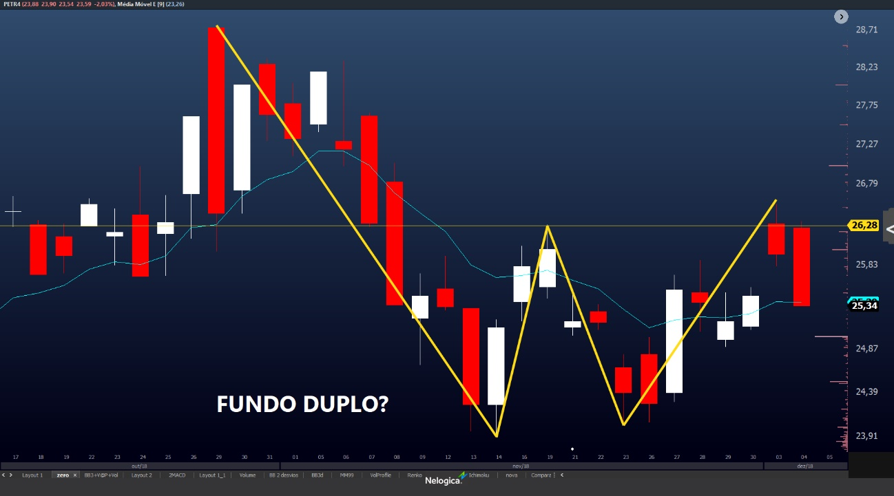
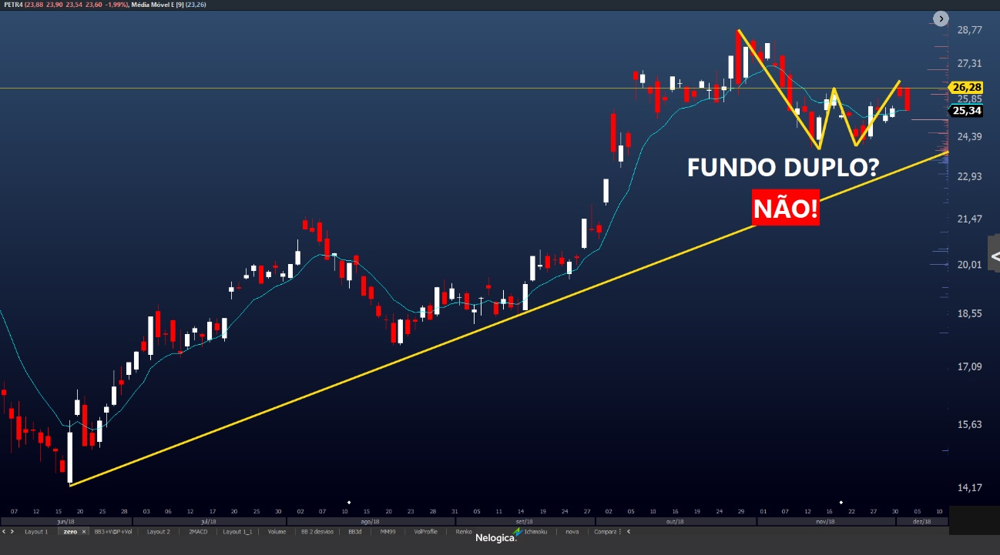
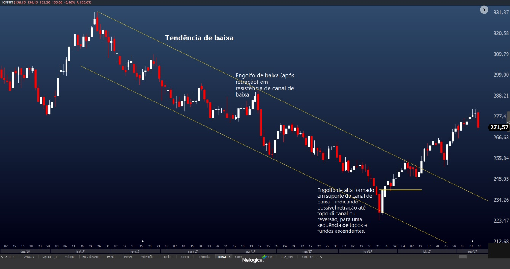
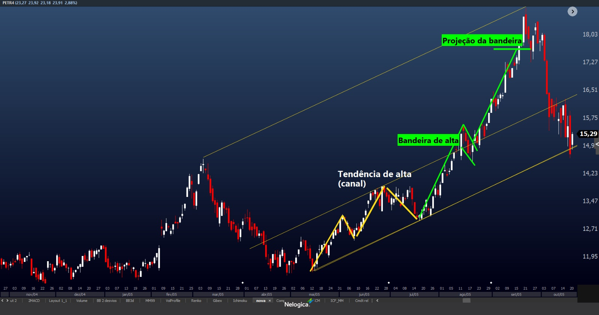

Faça uma publicação!

Quero te ajudar a identificar os padrões corretamente, pra que você não caia mais em armadilhas com formações de figuras que podem não funcionar por um simples motivo: estar no lugar errado.
Se você é um entusiasta da análise técnica como eu, já deve ter feito pesquisas e se deparado com inúmeras figuras formadas pelos preços que acionam gatilhos lindos e dão resultados maravilhosos, não é mesmo?
OCO, triângulo, OCOI, retângulo, bandeiras, flâmulas, Cunha. Esses são os mais conhecidos padrões e são facilmente encontrados na internet. Tem também os padrões de candles como Doji, engolfo de alta e de baixa, Piercing, Nuvem Negra, Harami de alta e de baixa, martelo, enforcado, entre outros.
Um erro muito comum ao identificarmos essas formações tanto de figuras quanto de candles é o de não atentar ao lugar em que a figura é formada.
Esses padrões são aqueles que nos indicam a possibilidade do fim de uma tendência e início da oposta ou ainda, pode indicar uma retração, que também pode gerar boas oportunidades de operações.
Repare que especialmente quando você usa gráficos mostram janela temporal mais curta, é comum, ao observar uma figura, você não “questionar” sua formação fazendo um simples “Zoom Menos”, ou seja, pegar uma janela temporal maior pra entender em que parte da estrutura de um movimento maior aquela figura está se formando. Daí acontecem os gatilhos que dão operações muitas vezes perdedoras. Preste atenção na figura:
Dessa perspectiva, o fundo duplo está bonito, não? Dois fundos nivelados, e o gatilho é o topo formado entre eles.
Porém, observando o movimento mais amplo percebemos por que não pode ser um fundo duplo.
O padrão fundo duplo é de reversão altista, ou seja, reverte um movimento de baixa para alta. Observe a mesma figura de um outro contexto, entendendo a posição da figura:
Os preços já estão em clara tendência de alta, logo, a figura no detalhe não pode ser um padrão fundo duplo pois está dentro de um movimento de alta.
Padrões de reversão altista acontecem em final de movimento de queda e os baixistas em final de movimento de alta. Portanto é importante observar em que posição estão essas figuras para não confundir uma simples formação com um padrão de reversão. Aqui usei o exemplo do fundo duplo, mas vale para todos os padrões de reversão – citei os mais conhecidos no começo do texto.
Agora vai a figura do padrão de reversão perfeito e com alto grau de confiabilidade: fundo duplo observando sua localização de clara tendência de baixa, nível de formação de suporte dos fundos e acionamento do gatilho.

Minha sugestão é que você exercite o olhar para identificar corretamente os padrões, buscando em diversos ativos e tempos gráfico essas formações. Traçar canais de tendência podem ajudar você a identificar melhor as figuras.
É importante ressaltar que dependendo do tempo gráfico os padrões podem ter objetivos mais curtos ou mais longos. Quanto maior o tempo gráfico, maior é o conjunto de informações que temos nas formações, portanto nos tempos mais longos a confiabilidade dos padrões tende a ser maior. Isso não significa que em gráficos menores você não possa aplicar essas análises e até operar esses padrões. Tudo é uma questão de alinhamento de perfil.
No exemplo acima, percebemos como fica mais fácil identificarmos os padrões pela sua localização: um engolfo de baixa em região de resistência entro de um canal de baixa, gera um bom sinal de venda de retração, acreditando na continuação da tendência – comentarei padrões de continuação mais adiante.
Com o mesmo padrão mas sinalizando a direção oposta, um engolfo de alta numa região de suporte de canal de baixa sugere retração – nesse caso um movimento de alta corretivo para posterior continuação – ou ainda possibilidade de reversão de tendência.
Os padrões de continuação são aqueles que indicam que os preços estão num momento de retomada de fôlego para um novo impulso a favor da tendência vigente. Os padrões mais conhecidos e confiáveis de continuação são as bandeiras e flâmulas.
Formadas por um longo impulso direcional e pequena congestão na extremidade do movimento, uma bandeira ou flâmula de alta só pode acontecer dentro de um canal de alta, uma tendência de alta, caso contrário é apenas uma formação parecida e não o padrão de continuação – afinal, se a tendência for de baixa, uma bandeira de alta não pode representar uma figura de continuação, concorda?
Observe nas figuras abaixo como a posição da figura é importante.

A pegadinha aqui é que a formação foi perfeita, mas no lugar errado. Para entendermos que o mercado está em tendência, nem que seja “microtendência” precisamos unir pelo menos dois topos e dois fundos direcionais, e precisamos dos quatros toques. A partir daí poderemos observar padrões de continuação.
Observe a diferença da convicção do movimento quando o padrão acontece no lugar certo e é acionado.
Use os canais de tendência para te ajudar a se orientar no posicionamento dos padrões formados, sejam eles de reversão ou continuação, isso vai evitar que você acredite que está operando um padrão, quando na verdade não está.
Entendemos então que as figuras precisam de um contexto para serem validadas e confiáveis, e uma forma de ajudar a entender é traçando linhas de canais. Além disso, é interessante observar se as formações acontecem em topos ou fundos de tendência já definida, no caso dos padrões de reversão e se estão dentro de uma tendência definida, em caso de padrões de continuação.
E aí, trader, o que achou? Deixe sua opinião aqui nos comentários!